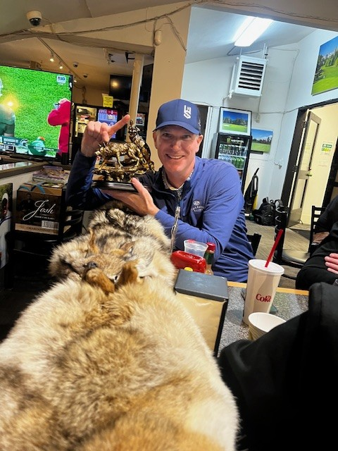
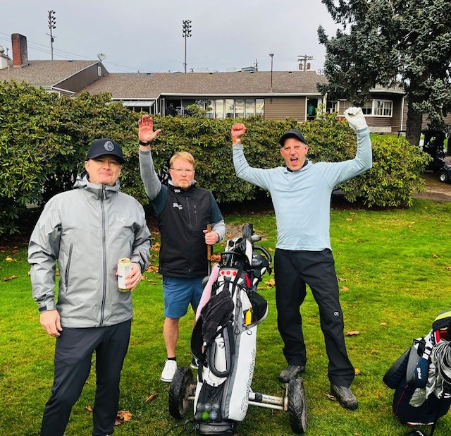
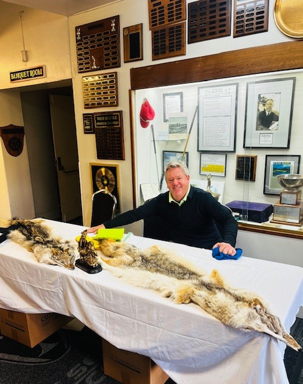
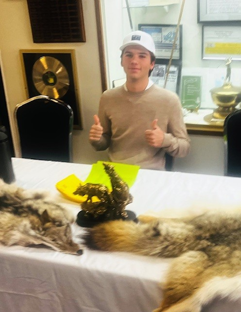
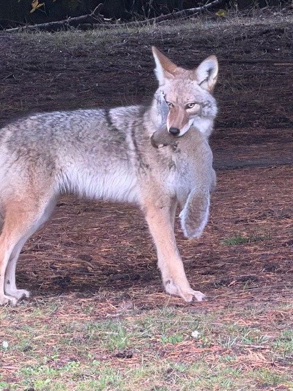

Season Shout-Outs and Coyote Howl Scat
Greetings West Seattle Golf Membership,
As the 2026 season winds down for many, it's time to shout out to all involved who made this golf season a memorable & often rewarding one out here on Fauntleroy Creek:
- Incredible maintenance by Rocky and his hardworking crew for keeping this municipal golf course in excellent playing condition despite high traffic, limited staff, a constrained budget, and challenging weather. Whether it seems too hot, too wet, too windy or too dark, the crew buffs out our greens, traps and fairways, all while taking on drainage projects, irrigation systems, and the pestering general public. Thank you very much maintenance crew, especially veteran Mike Houchens.
- Likewise, kudos to the fantastic restaurant and Fox Den staff who feed us, pour us libations, and also join us on the course with eager golfing attitudes. The same applies to Colin's pro shop staff, including our marshals. I am convinced that because the West Seattle golf course staff are part of our club and often work here because they love the game, we all benefit. This is not Bushwood Country Club with a snob factor or caste system; it's an inclusive community.
- Your West Seattle Golf Club board of directors and officers, whose primary job is to promote member golf through competition & social activity. Our new volunteer reward system, implemented by all the directors, successfully supported events at a low cost. And with the hard work & steady direction of Tournament Director Aron DeFaccio implementing the new Live Tourney service, tournament administration has become more efficient & easier.
- Behind it all, the hardest working board member, Treasurer Mike Little, has kept our books in fine condition, consistently reporting a solid financial foundation. This is one of the jobs that we need the next generation of board members to take an interest in — more on that below. Also, thank you, VP Ben Tang, Handicap chair Garrett Gants & Secretary Beau Gants for adeptly tackling their officer responsibilities. Plus, thank you Milo Stover for running our Wednesday night league while in college, working in the golf shop and playing a lot of competitive golf.....!!
- Director Wendy Gapp led the West Seattle women to a victory in what I think was the first Women's Seattle Cup, supported by our club with wardrobe sponsorship. They brought home a nice piece of hardware currently sitting in the Fox Den.
To all: Bravo!
Get Involved: 2027 Board Openings
That said, it is the time of year we look for new directors and/or officers for 2027. If you are interested in getting involved, there are 3, 2 & 1 year positions and we are currently determining where the vacancies will be. You can also run for an officer position, if approved by the nomination committee. Normally, directors move into officer positions as needed once they understand the role(s), among other considerations. If we have multiple candidates, we will hold an election in December.
Please contact both myself & Ben Tang if you're interested: president@westseattlegolfclub.org and vicepresident@westseattlegolfclub.org
Coyote Howl Scat
Despite the monsoon threat, it was a glorious weather day for the inaugural tournament, with about 100 participants. The amount of rain during the week prevented the greens crew from rolling the greens, so we did not have as difficult a day as possible with the slower greens; however, the carnage was still apparent. I backed off on a few more severe hole placements, and learned a lot about tipping and tucking. Thanks to Colin for assisting in course set-up. Send your complaints to Jackson Park Golf Course.
Here's a few rough statistics from the back of my napkin:
- Low net for the entire tournament was even par(!) by Brian Sherick, who is the low gross champion as well. The veteran big man out of Spokane, a Seattle Cup team stalwart and West Seattle resident, never recorded a birdie with his new broomstick putter, and apparently never needed one. Nice work, Brian.
- First Flight had 25 players with handicaps of 4 or lower, and only 8 players broke 80 (low gross was 75, +3).
- All those skilled players combined for 29 birdies in 450 holes.
- 47 players were in triple digits (100+ shots).
- Runner-up Garrett Gants shot one-under 34 on the back nine, as did three-time club champ Andrew Coghill. Both were tripped up on the front nine chasing squirrels.
- 46 total birdies for the field, and the skins (or coyote pelts) by flight paid nicely for those able to throw daggers.
- 5 players won two skins: legendary tournament director Doug Marshall snagged two, as did former club champions Milo Stover and Andrew Coghill. In Fourth Flight, Sean Becker, Zachary Blachon and Tom Hammack all got two pelts.
- Nobody from rival Interbay cracked the top three in gross or net in any flight. Maybe the course was just too tough for those range monkeys ;)




All in all, it was a fine day. Even one of our precious coyotes scored a fat squirrel on the 4th hole — see photo by Nicole Stone!

One Calendar Note
Our annual Christmas Party (banquet with live holiday jazz courtesy of longtime member Dan Kramlich) is slated for Saturday, December 19th. We will send a separate email reminder and sign-up information. Normally it is a plus-one event, which is likely again.
All the best,